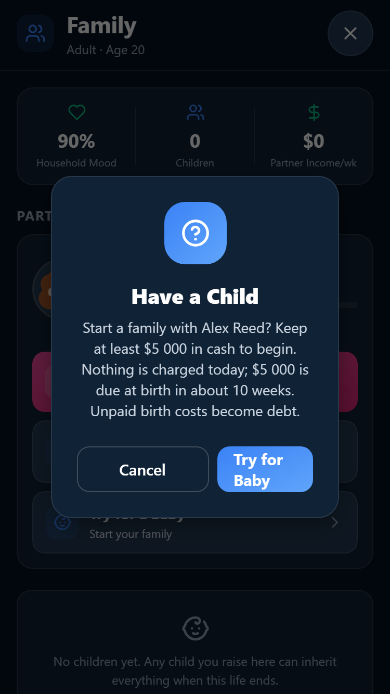
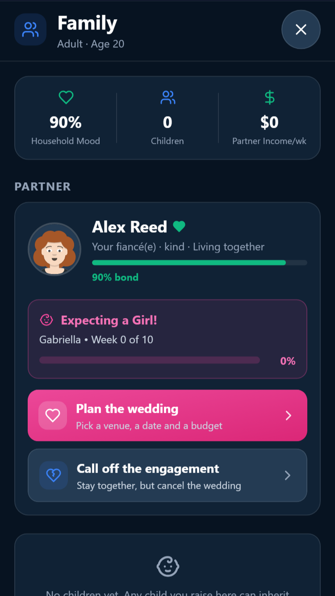
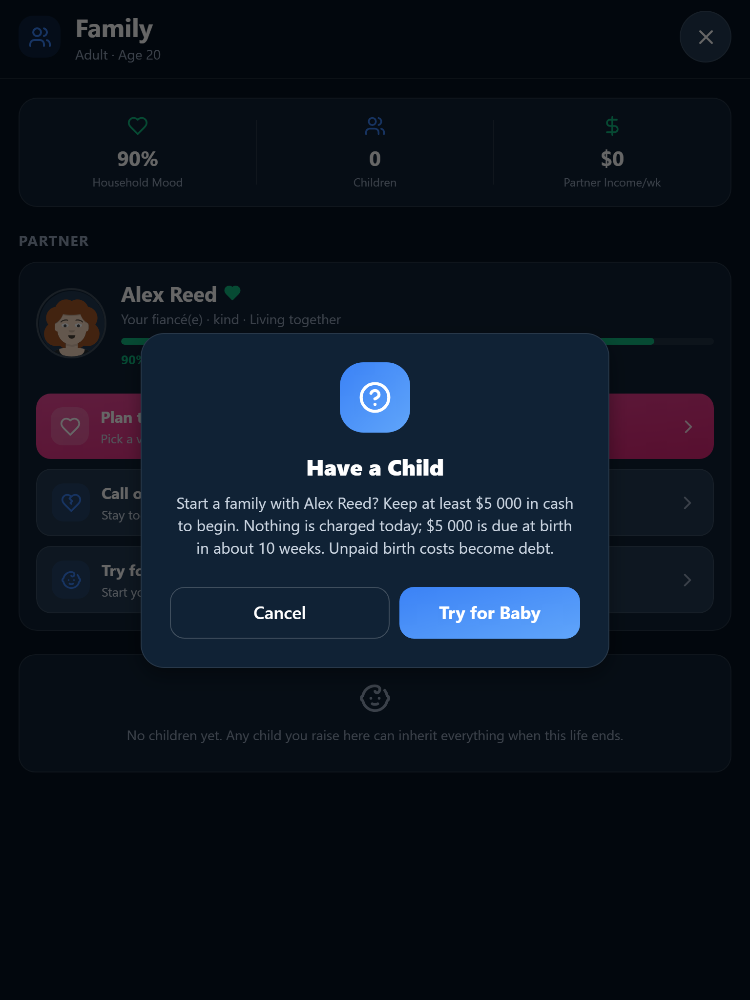
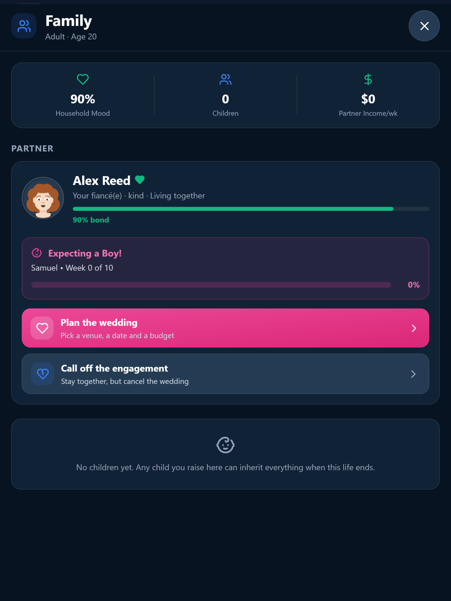

Relationships and family
27 September 2026. Real browser captures from isolated test saves. Native acceptance remains open.

375px: Reserve requirement and birth cost before confirmation
375px: Pregnancy retained after save and reopen
768px: Reserve requirement and birth cost before confirmation
768px: Pregnancy retained after save and reopen